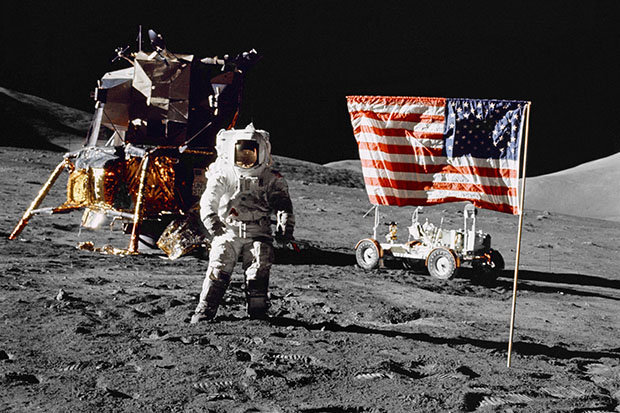

Milky Way
Nebula


The National Aeronautics and Space Administration is an independent agency of the United States Federal Government responsible for the civilian space program, as well as aeronautics and aerospace research. President Dwight D. Eisenhower established NASA in 1958 with a distinctly civilian, rather than military, orientation encouraging peaceful applications in space science. The National Aeronautics and Space Act was passed on July 29, 1958, disestablishing NASA's predecessor, the National Advisory Committee for Aeronautics (NACA). The new agency became operational on October 1, 1958. Since its establishment, most US space exploration efforts have been led by NASA, including the Apollo Moon landingmissions, the Skylab space station, and later the Space Shuttle. NASA is supporting the International Space Station and is overseeing the development of the Orion Multi-Purpose Crew Vehicle, the Space Launch System and Commercial Crew vehicles. The agency is also responsible for the Launch Services Program which provides oversight of launch operations and countdown management for unmanned NASA launches. NASA science is focused on better understanding Earth through the Earth Observing System; advancing heliophysics through the efforts of the Science Mission Directorate's Heliophysics Research Program; exploring bodies throughout the Solar System with advanced robotic spacecraft missions such as New Horizons; and researching astrophysics topics, such as the Big Bang, through the Great Observatories and associated programs.
Space Exploration Technologies Corp., doing business as SpaceX, is a private American aerospace manufacturer and space transportation services company headquartered in Hawthorne, California. It was founded in 2002 by entrepreneur Elon Musk with the goal of reducing space transportation costs and enabling the colonization of Mars. SpaceX has since developed the Falconlaunch vehicle family and the Dragon spacecraft family, which both currently deliver payloads into Earth orbit. SpaceX's achievements include the first privately funded liquid-propellant rocket to reach orbit (Falcon 1 in 2008), the first private company to successfully launch, orbit, and recover a spacecraft (Dragon in 2010), the first private company to send a spacecraft to the International Space Station (Dragon in 2012), the first propulsive landing for an orbital rocket (Falcon 9 in 2015), the first reuse of an orbital rocket (Falcon 9 in 2017), and the first private company to launch an object into orbit around the sun (Falcon Heavy's payload of a Tesla Roadster in 2018). SpaceX has flown 14 resupply missions to the International Space Station (ISS) under a partnership with NASA. NASA also awarded SpaceX a further development contract in 2011 to develop and demonstrate a human-rated Dragon, which would be used to transport astronauts to the ISS and return them safely to Earth. SpaceX announced in 2011 that it was beginning a funded reusable launch system technology development program. In December 2015, the first Falcon 9 was flown back to a landing pad near the launch site, where it successfully accomplished a propulsive vertical landing. This was the first such achievement by a rocket for orbital spaceflight. In April 2016, with the launch of CRS-8, SpaceX successfully vertically landed a first stage on an ocean drone ship landing platform. In May 2016, in another first, SpaceX again landed a first stage, but during a significantly more energetic geostationary transfer orbit mission. In March 2017, SpaceX became the first to successfully re-launch and land the first stage of an orbital rocket. In September 2016, CEO Elon Musk unveiled the mission architecture of the Interplanetary Transport System program, an ambitious privately funded initiative to develop spaceflight technology for use in crewed interplanetary spaceflight. In 2017, Musk unveiled an updated configuration of the system, now named the BFR, which will be the largest rocket in history and will be fully reusable when it debuts in the early 2020s. BFR is the acronym for Big Falcon Rocket. SpaceX revealed on Twitter that the world’s first private passenger, who was later revealed to be Yusaku Maezawa, has been signed to fly across the moon in the BFR rocket. SpaceX also plans to launch its first crewed spacecraft, Dragon 2, in April 2019.

Blue Origin, LLC is an American privately funded aerospace manufacturer and spaceflight services company headquartered in Kent, Washington. Founded in 2000 by Jeff Bezos, the company is developing technologies to enable private human access to space with the goal to dramatically lower costs and increase reliability. Blue Origin is employing an incremental approach from suborbital to orbital flight, with each developmental step building on its prior work. The company motto is Gradatim Ferociter, Latin for "Step by Step, Ferociously". Blue Origin is developing a variety of technologies, with a focus on rocket-powered vertical takeoff and vertical landing (VTVL) vehicles for access to suborbital and orbital space. The company's name refers to the blue planet, Earth, as the point of origin. Initially focused on suborbital spaceflight, the company has designed, built and flown multiple testbeds of its New Shepard spacecraft at its facility in Culberson County, Texas. Developmental test flight of the New Shepard, named after the first American in space Alan Shepard, began in April 2015, and flight testing is continuing into 2018, with first passenger-carrying spaceflight expected in late 2018. On nearly every one of the test flights since 2015, the uncrewed vehicle has flown to a planned test altitude of more than 100 km (330,000 ft) and achieved a top speed of more than Mach 3 (3,675 km/h; 2,284 mph), reaching space above the Kármán line, with both the space capsule and its rocket booster successfully soft landing, making reuse possible. By 2016, the second New Shepard booster test article had made four flights, each time exceeding 100 km (330,000 ft) in altitude, before returning for successful soft landings. The first crewed test flights are planned to take place in 2018, with the start of commercial service in 2019. Blue Origin has become a part of a "dramatic metamorphosis" of the space industry in recent years, having moved into the orbitalspaceflight technology business in 2014, initially as a rocket engine supplier for others via a contractual agreement to build a new large rocket engine, the BE-4, for major US launch system operator United Launch Alliance (ULA). ULA is also considering the BE-3, Blue Origin's smaller rocket engine used on New Shepard, for use in a new second stage—the Advanced Cryogenic Evolved Stage(ACES)—which will become the primary upper stage for ULA's Vulcan orbital launch vehicle in the 2020s. By 2015, Blue Origin had announced plans to also manufacture and fly its own orbital launch vehicle from the Florida Space Coast, known as the New Glenn. BE-4 is expected to complete engine qualification testing by late 2018.